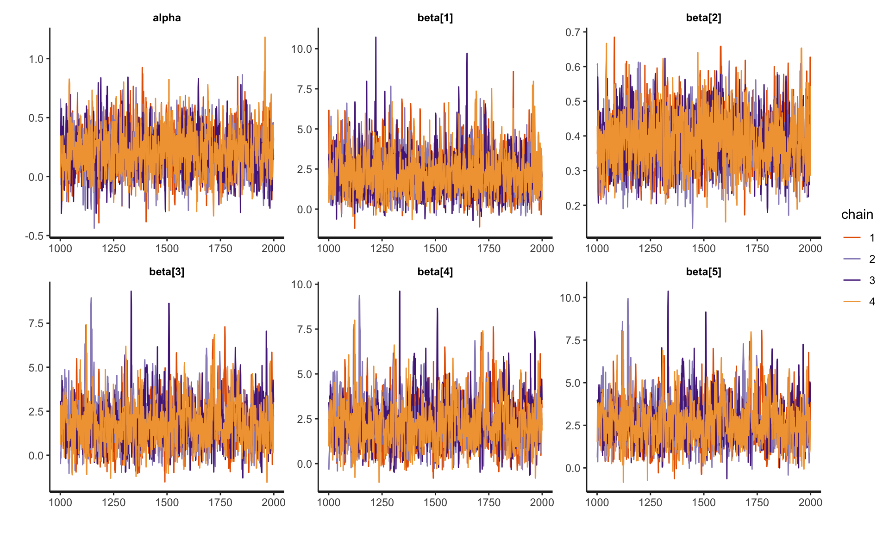
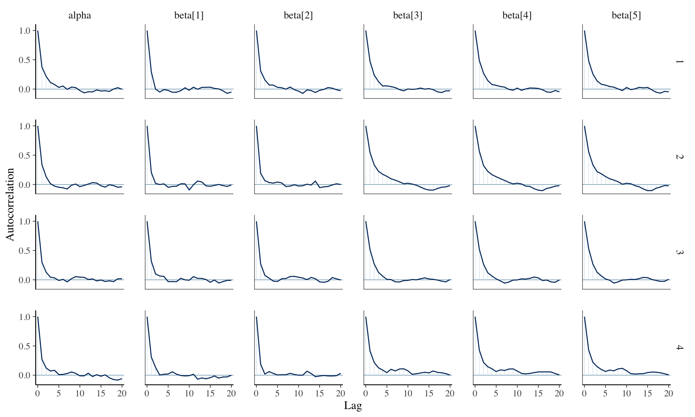
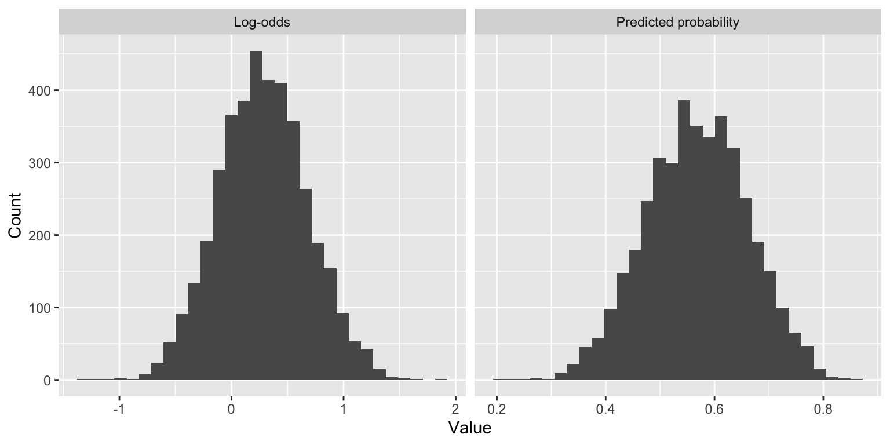
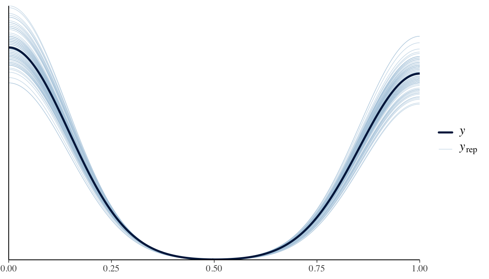
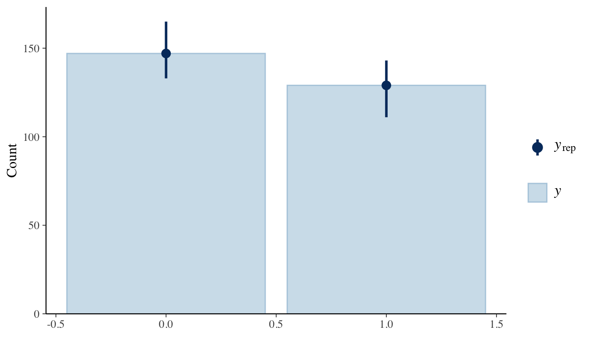
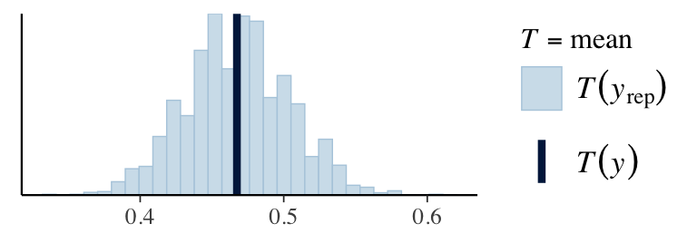
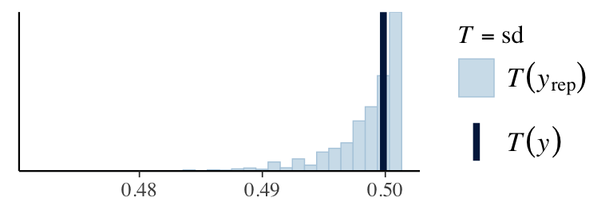
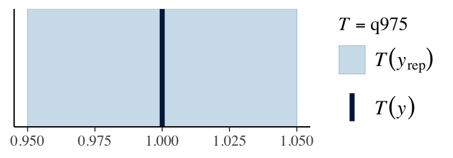

── Attaching core tidyverse packages ──────────────────────── tidyverse 2.0.0 ──
✔ dplyr 1.1.4 ✔ readr 2.1.5
✔ forcats 1.0.0 ✔ stringr 1.5.1
✔ ggplot2 3.5.1 ✔ tibble 3.2.1
✔ lubridate 1.9.3 ✔ tidyr 1.3.1
✔ purrr 1.0.2
── Conflicts ────────────────────────────────────────── tidyverse_conflicts() ──
✖ dplyr::filter() masks stats::filter()
✖ dplyr::lag() masks stats::lag()
ℹ Use the conflicted package (<http://conflicted.r-lib.org/>) to force all conflicts to become errors
Attaching package: 'gridExtra'
The following object is masked from 'package:dplyr':
combine
Loaded lars 1.3
Attaching package: 'LaplacesDemon'
The following objects are masked from 'package:mvtnorm':
dmvt, logdet, rmvt
The following objects are masked from 'package:lubridate':
dst, interval
The following object is masked from 'package:purrr':
partial
nimble version 1.2.1 is loaded.
For more information on NIMBLE and a User Manual,
please visit https://R-nimble.org.
Note for advanced users who have written their own MCMC samplers:
As of version 0.13.0, NIMBLE's protocol for handling posterior
predictive nodes has changed in a way that could affect user-defined
samplers in some situations. Please see Section 15.5.1 of the User Manual.
Attaching package: 'nimble'
The following objects are masked from 'package:LaplacesDemon':
cloglog, dcat, dinvgamma, is.model, logdet, logit, rcat, rinvgamma
The following object is masked from 'package:mvtnorm':
logdet
The following object is masked from 'package:stats':
simulate
The following object is masked from 'package:base':
declareClassification
Review of last lecture
Last week, we learned about Bayesian approaches to robust regression and regularization.
- Global-local shrinkage priors.
This week, we will focus on classification models.
Today: Binary classification (logistic regression).
Thursday: Multiclass classification (multinomial, ordinal regression).
Models for binary outcomes
Bernoulli random variable: Used for binary outcomes (success/failure), e.g., whether a patient responds to a treatment (yes/no).
Binomial random variable: Used when there are multiple trials (e.g., 10 patients), and you want to model the number of successes (e.g., how many out of 10 patients experience a treatment response).
Bernoulli random variable example
A Bernoulli random variable represents a random variable with two possible outcomes: 0 or 1.
Scenario:
Imagine a medical study on a new drug for hypertension (high blood pressure). You want to model whether a patient responds positively to the treatment.
Success (1): The patient’s blood pressure decreases significantly (e.g., more than 10% reduction).
Failure (0): The patient does not experience a significant decrease in blood pressure.
Binomial random variable example
A Binomial random variable represents the number of successes in a fixed number of independent Bernoulli trials.
Scenario:
A clinical trial is conducted where 10 patients are given a new drug for diabetes. You want to model how many of these 10 patients experience a significant reduction in their blood sugar levels (e.g., a decrease by at least 20%).
Each patient’s outcome is a Bernoulli random variable: success (1) if their blood sugar level decreases, failure (0) if it does not.
The total number of successes (patients who experience a reduction) is modeled as a Binomial random variable.
Models for binary outcomes
- Suppose \(Y_i \stackrel{ind}{\sim} \text{Bernoulli}(\pi_i)\) for \(i = 1,\ldots,n\). The pmf is,
\[f(Y_i) = P(Y_i = y) = \pi_i^y (1 - \pi_i)^{1 - y}, \quad y \in\{0,1\}.\]
We only need to specify \(\pi_i = P(Y_i = 1)\).
One strategy might be to simply fit a linear regression model,
\[Y_i = \alpha + \mathbf{x}_i \boldsymbol{\beta} + \epsilon_i,\quad\epsilon_i \sim N(0, \sigma^2).\]
- We can set \(P(Y_i = 1) = \hat{Y}_i\).
Primary biliary cirrhosis
The Mayo Clinic conducted a trial for primary biliary cirrhosis, comparing the drug D-penicillamine vs. placebo. Patients were followed for a specified duration, and their status at the end of follow-up (whether they died) was recorded.
Researchers are interested in predicting whether a patient died based on the following variables:
ascites: whether the patient had ascites (1 = yes, 0 = no)
bilirubin: serum bilirubin in mg/dL
stage: histologic stage of disease (ordinal categorical variable with stages 1, 2, 3, and 4)
What can go wrong?
- Suppose we fit the following model:
\[\begin{aligned} Y_i &= \alpha + \beta_1(ascites)_i + \beta_2(bilirubin)_i\\ &\quad+\beta_3(stage = 2)_i + \beta_4(stage = 3)_i\\ &\quad+\beta_5(stage = 4)_i + \epsilon_i,\quad \epsilon_i \sim N(0,\sigma^2) \end{aligned}\]
. . .
What can go wrong?
What can go wrong?

What can go wrong?
- Additionally, as a probability, \(P(Y_i = 1)\) must be in the interval [0, 1], but there is nothing in the model that enforces this constraint, so that you could be estimating probabilities that are negative or that are greater than 1!
From probabilities to log-odds
Suppose the probability of an event is \(\pi\).
Then the odds that the event occurs is \(\frac{\pi}{1 - \pi}\).
Taking the (natural) log of the odds, we have the logit of \(\pi\): the log-odds:
\[\text{logit}(\pi) = \log\left(\frac{\pi}{1-\pi}\right).\]
- Note that although \(\pi\) is constrained to lie between 0 and 1, the logit of \(\pi\) is unconstrained - it can be anything from \(-\infty\) to \(\infty\).
Logistic regression model
Let’s create a model for the logit of \(\pi\): \(\text{logit}(\pi_i)= \eta_i\), where \(\eta_i = \alpha + \mathbf{x}_i \boldsymbol{\beta}.\)
This is a linear model for a transformation of the outcome of interest, and is also equivalent to,
\[\pi_i = \frac{\exp(\eta_i)}{1 + \exp(\eta_i)} = \text{expit}(\eta_i).\]
- The expression on the right is called a logistic function and cannot yield a value that is negative or a value that is >1. Fitting a model of this form is known as logistic regression.
Logistic regression
\[\text{logit}(\pi_i) = \log\left(\frac{\pi_i}{1 - \pi_i}\right) = \eta_i\]
Negative logits represent probabilities less than one-half.
- \(\eta_i < 0 \implies \pi_i < 0.5\).
Positive logits represent probabilities greater than one-half.
- \(\eta_i > 0 \implies \pi_i > 0.5\).
Interpreting parameters in logistic regression
Typically we interpret functions of parameters in logistic regression rather than the parameters themselves.
For the simple model: \(\log\left(\frac{\pi_i}{1 - \pi_i}\right) = \alpha + \beta X_{i},\) we note that the probability that \(Y_i = 1\) when \(X_i = 0\) is
\[P(Y_i = 1 | X_{i} = 0) = \frac{\exp(\alpha)}{1 + \exp(\alpha)}.\]
Interpreting parameters in logistic regression
Suppose that \(X\) is a binary (0/1) variable (e.g., \(X = 1\) for males and 0 for non-males).
In this case, we interpret \(\exp(\beta)\) as the odds ratio (OR) of the response for the two possible levels of \(X\).
For \(X\) on other scales, \(\exp(\beta)\) is interpreted as the odds ratio of the response comparing two values of \(X\) one unit apart.
Why?
Interpreting parameters in logistic regression
The log odds of response for \(X = 1\) is given by \(\alpha + \beta\), and the log odds of response for \(X = 0\) is \(\alpha\).
So the odds ratio of response comparing \(X = 1\) to \(X = 0\) is given by \(\frac{\exp(\alpha + \beta)}{\exp(\alpha)} = \exp(\beta)\).
In a multivariable logistic regression model with more than one predictor, this OR is interpreted conditionally on values of other variables (i.e., controlling for them).
Bayesian logistic regression
We start with observations \(Y_i \in \{0,1\}\) for \(i = 1,\ldots,n\), where \(Y_i \stackrel{ind}{\sim} \text{Bernoulli}(\pi_i)\), \(\pi_i = P(Y_i = 1)\).
The log-odds are modeled as \(\text{logit}(\pi_i) = \alpha + \mathbf{x}_i \boldsymbol{\beta} = \eta_i\).
To complete the Bayesian model specification, we must place priors on \(\alpha\) and \(\boldsymbol{\beta}\).
- All priors we have discussed up-to-this point apply!
Historically, this was a difficult model to fit, but can be easily implemented in Stan.
Logistic regression in Stan
// Saved in logistic_regression.stan
data {
int<lower = 1> n;
int<lower = 1> p;
int Y[n]; // Y is now type int
matrix[n, p] X;
}
transformed data {
matrix[n, p] X_centered; // We are only centering X!
row_vector[p] X_bar;
for (i in 1:p) {
X_bar[i] = mean(X[, i]);
X_centered[, i] = X[, i] - X_bar[i];
}
}
parameters {
real alpha;
vector[p] beta;
}
model {
target += bernoulli_logit_lpmf(Y | alpha + X_centered * beta); // bernoulli likelihood parameterized in logits
target += normal_lpdf(alpha | 0, 10);
target += normal_lpdf(beta | 0, 10);
}
generated quantities {
real pi_average = exp(alpha) / (1 + exp(alpha));
vector[n] Y_pred;
vector[n] log_lik;
for (i in 1:n) {
Y_pred[i] = bernoulli_logit_rng(alpha + X_centered[i, ] * beta);
log_lik[i] = bernoulli_logit_lpmf(Y[i] | alpha + X_centered[i, ] * beta);
}
}Primary biliary cirrhosis
head(pbc) id trt age sex ascites hepato spiders edema bili chol albumin copper
1 1 1 58.76523 f 1 1 1 1.0 14.5 261 2.60 156
2 2 1 56.44627 f 0 1 1 0.0 1.1 302 4.14 54
3 3 1 70.07255 m 0 0 0 0.5 1.4 176 3.48 210
4 4 1 54.74059 f 0 1 1 0.5 1.8 244 2.54 64
5 5 2 38.10541 f 0 1 1 0.0 3.4 279 3.53 143
6 7 2 55.53457 f 0 1 0 0.0 1.0 322 4.09 52
alk.phos ast trig platelet protime stage outcome
1 1718.0 137.95 172 190 12.2 4 1
2 7394.8 113.52 88 221 10.6 3 0
3 516.0 96.10 55 151 12.0 4 1
4 6121.8 60.63 92 183 10.3 4 1
5 671.0 113.15 72 136 10.9 3 1
6 824.0 60.45 213 204 9.7 3 0Prepare data for Stan
X <- model.matrix(object = ~ ascites + bili + as.factor(stage), data = pbc)[, -1]
Y <- pbc$outcome
stan_data <- list(n = nrow(pbc),
p = ncol(X),
Y = Y,
X = X)
head(X) ascites bili as.factor(stage)2 as.factor(stage)3 as.factor(stage)4
1 1 14.5 0 0 1
2 0 1.1 0 1 0
3 0 1.4 0 0 1
4 0 1.8 0 0 1
5 0 3.4 0 1 0
6 0 1.0 0 1 0Logistic regression in Stan
library(rstan)
compiled_model <- stan_model(file = "logistic_regression.stan")
fit <- sampling(compiled_model, data = stan_data)
print(fit, pars = c("alpha", "beta", "pi_average"), probs = c(0.025, 0.5, 0.975))Inference for Stan model: anon_model.
4 chains, each with iter=2000; warmup=1000; thin=1;
post-warmup draws per chain=1000, total post-warmup draws=4000.
mean se_mean sd 2.5% 50% 97.5% n_eff Rhat
alpha 0.21 0.00 0.19 -0.14 0.20 0.60 1819 1.00
beta[1] 2.24 0.03 1.32 0.12 2.12 5.30 2328 1.00
beta[2] 0.38 0.00 0.08 0.24 0.38 0.55 2027 1.00
beta[3] 1.79 0.04 1.31 -0.43 1.65 4.86 1097 1.01
beta[4] 2.26 0.04 1.30 0.10 2.14 5.27 1073 1.01
beta[5] 2.69 0.04 1.31 0.52 2.54 5.74 1069 1.01
pi_average 0.55 0.00 0.05 0.47 0.55 0.65 1826 1.00
Samples were drawn using NUTS(diag_e) at Mon Feb 17 09:17:32 2025.
For each parameter, n_eff is a crude measure of effective sample size,
and Rhat is the potential scale reduction factor on split chains (at
convergence, Rhat=1).Convergence diagnostics

Convergence diagnostics
This is bayesplot version 1.11.1- Online documentation and vignettes at mc-stan.org/bayesplot- bayesplot theme set to bayesplot::theme_default() * Does _not_ affect other ggplot2 plots * See ?bayesplot_theme_set for details on theme setting
Back to the PBC data
- Fitting a logistic regression model, we obtain
| variable | mean | sd | 2.5% | 97.5% | |
|---|---|---|---|---|---|
| alpha | intercept | 0.21 | 0.00 | -0.14 | 0.60 |
| beta[1] | ascites | 2.24 | 0.03 | 0.12 | 5.30 |
| beta[2] | bilirubin | 0.38 | 0.00 | 0.24 | 0.55 |
| beta[3] | stage == 2 | 1.79 | 0.04 | -0.43 | 4.86 |
| beta[4] | stage == 3 | 2.26 | 0.04 | 0.10 | 5.27 |
| beta[5] | stage == 4 | 2.69 | 0.04 | 0.52 | 5.74 |
- How might we interpret these coefficients as odds ratios?
Back to the PBC data
Remember, we are interested in the probability that a patient died during follow-up (a “success”). We are predicting the log-odds of this event happening.
The posterior mean for ascites was 2.24. Thus, the odds ratio for dying is \(\exp(2.24) \approx 9.40\). That is, patients with ascites have 9 times the odds of dying compared to patients that do not, holding all other variables constant.
The posterior mean for bilirubin was 0.38. Thus, the odds ratio for dying for a patient with 1 additional mg/dL serum bilirubin compared to another is \(\exp(0.38) \approx 1.46\), holding all other variables constant.
The baseline stage was 1. The posterior mean for stage 3 was 2.26. Thus, patients in stage 3 have approximately 9.58 times the odds of dying compared to patients that do not, holding all other variables constant.
Predicted probabilities
- There is a one-to-one relationship between \(\pi\) and \(\text{logit}(\pi)\). So, if we predict \(\text{logit}(\pi)\), we can “back-transform” to get back to a predicted probability.
// stored in logistic_regression_new.stan
data {
row_vector[p] X_new;
}
generated quantities {
real eta_new = (alpha + (X_new - X_bar) * beta);
real pi_new = inv_logit(eta_new); // expit function
real Y_new = bernoulli_logit_rng(eta_new); // posterior predictive distribution
}Predicted probabilities
- For instance, suppose a patient does not have ascites, has a bilirubin level of 5 mg/dL, and is a stage 2 patient.
compiled_model <- stan_model(file = "logistic_regression_new.stan")
stan_data <- list(n = nrow(pbc),
p = ncol(X),
Y = Y,
X = X,
X_new = c(0, 5, 1, 0, 0))
fit <- sampling(compiled_model, data = stan_data)Predicted probabilities
- For instance, suppose a patient does not have ascites, has a bilirubin level of 5 mg/dL, and is a stage 2 patient.
Inference for Stan model: anon_model.
4 chains, each with iter=2000; warmup=1000; thin=1;
post-warmup draws per chain=1000, total post-warmup draws=4000.
mean se_mean sd 2.5% 50% 97.5% n_eff Rhat
eta_new 0.28 0.01 0.40 -0.48 0.27 1.07 2754 1
pi_new 0.57 0.00 0.09 0.38 0.57 0.75 2780 1
Y_new 0.57 0.01 0.49 0.00 1.00 1.00 4013 1
Samples were drawn using NUTS(diag_e) at Mon Feb 17 09:17:32 2025.
For each parameter, n_eff is a crude measure of effective sample size,
and Rhat is the potential scale reduction factor on split chains (at
convergence, Rhat=1).Predicted probabilities
`stat_bin()` using `bins = 30`. Pick better value with `binwidth`.
- Posterior mean of the predicted probabilities is 0.57.
Posterior predictive checks
y_pred <- rstan::extract(fit, pars = "Y_pred")$Y_pred
ppc_dens_overlay(stan_data$Y, y_pred[1:100, ])
Posterior predictive checks
ppc_bars(stan_data$Y, y_pred[1:100, ])
Posterior predictive checks
ppc_stat(stan_data$Y, y_pred, stat = "mean") # from bayesplot`stat_bin()` using `bins = 30`. Pick better value with `binwidth`.ppc_stat(stan_data$Y, y_pred, stat = "sd")`stat_bin()` using `bins = 30`. Pick better value with `binwidth`.q025 <- function(y) quantile(y, 0.025)
q975 <- function(y) quantile(y, 0.975)
ppc_stat(stan_data$Y, y_pred, stat = "q025")`stat_bin()` using `bins = 30`. Pick better value with `binwidth`.ppc_stat(stan_data$Y, y_pred, stat = "q975")`stat_bin()` using `bins = 30`. Pick better value with `binwidth`.


Model comparison
- Comparing our model to a baseline that removed stage.
library(loo)This is loo version 2.8.0- Online documentation and vignettes at mc-stan.org/loo- As of v2.0.0 loo defaults to 1 core but we recommend using as many as possible. Use the 'cores' argument or set options(mc.cores = NUM_CORES) for an entire session. log_lik <- loo::extract_log_lik(fit, parameter_name = "log_lik", merge_chains = TRUE)
log_lik_baseline <- loo::extract_log_lik(fit_baseline, parameter_name = "log_lik", merge_chains = TRUE)
waic_model <- loo::waic(log_lik)Warning:
3 (1.1%) p_waic estimates greater than 0.4. We recommend trying loo instead.waic_model_baseline <- loo::waic(log_lik_baseline)Warning:
2 (0.7%) p_waic estimates greater than 0.4. We recommend trying loo instead.###Make a comparison
comp_waic <- loo::loo_compare(list("full" = waic_model, "baseline" = waic_model_baseline))
print(comp_waic, digits = 2, simplify = FALSE) elpd_diff se_diff elpd_waic se_elpd_waic p_waic se_p_waic waic
full 0.00 0.00 -156.08 9.60 7.83 2.20 312.17
baseline -1.38 3.15 -157.46 9.29 4.68 1.82 314.92
se_waic
full 19.21
baseline 18.58Other models for binary data
An alternative approach is Probit regression, where we use the CDF of the standard normal distribution instead of the logit link: \(\Phi^{-1}(\pi) = \alpha + \beta X\)
Where \(\Phi^{-1}\) is the inverse normal CDF (also called the probit link function).
data {
int<lower = 1> n; // number of observations
int<lower = 1> p; // number of predictors
int<lower = 0, upper = 1> Y[n]; // binary outcome (0 or 1)
matrix[n, p] X; // design matrix (predictors)
}
parameters {
real alpha; // intercept
vector[p] beta; // coefficients
}
model {
target += bernoulli_lpmf(Phi(alpha + X * beta)); // Probit model
}Steps to selecting a Bayesian GLM
Identify the support of the response distribution.
Select the likelihood by picking a parametric family of distributions with this support.
Choose a link function \(g\) that transforms the range of parameters to the whole real line.
Specify a linear model on the transformed parameters.
Select priors for the regression coefficients.
Example of selecting a Bayesian GLM
Support: \(Y_i \in \{0, 1, 2, \ldots\}\).
Likelihood family: \(Y_i \stackrel{ind}{\sim} \text{Poisson}(\lambda_i)\).
Link: \(g(\lambda_i) = \log(\lambda_i) \in (−\infty, \infty)\).
Regression model: \(\log(\lambda_i) = \alpha + \mathbf{x}_i \boldsymbol{\beta}\).
Priors: \(\alpha, \beta_j \sim N(0, 10^2)\).
Prepare for next class
Work on HW 03.
Complete reading to prepare for next Thursday’s lecture
Thursday’s lecture: Multiclass classification